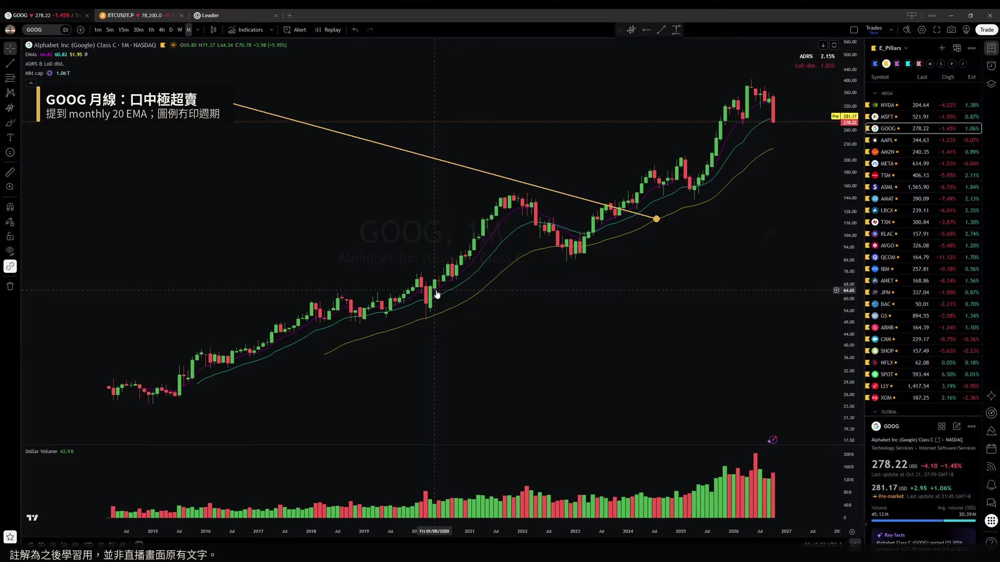
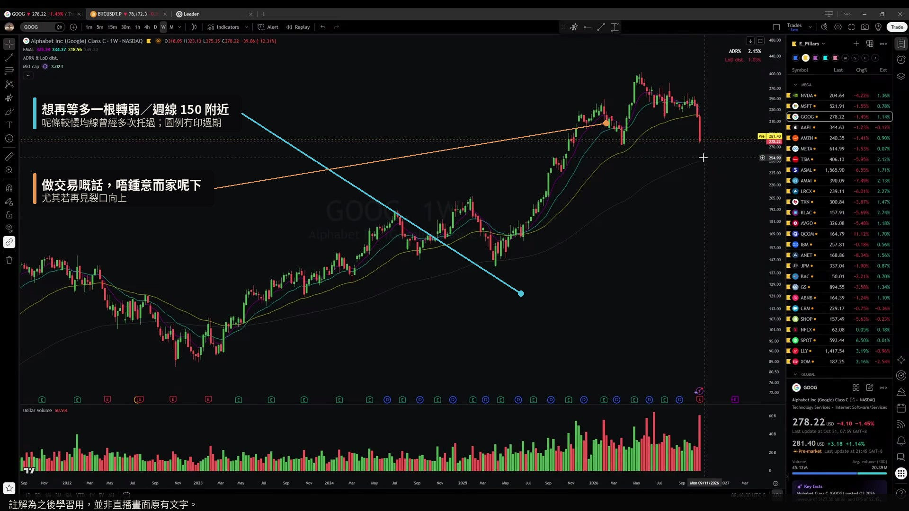
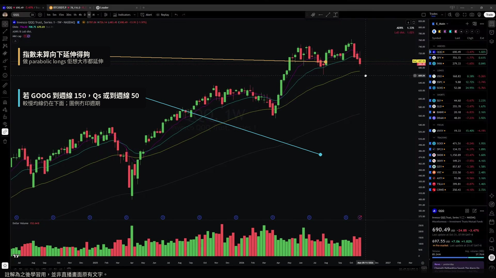
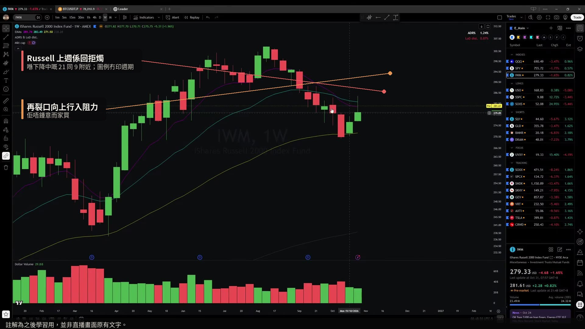

概要
個股可以等更好位置，大市都要配合
33:00 佢話 long Google 已經極超賣，並提到 monthly 20 EMA。以交易角度，想再等呢週多一根陰線；若 Google 再跌到週線 150 EMA——呢條線曾經多次托過——先會令回調做多好做得好多。尤其當時若再見裂口向上，佢唔鍾意。若當投資、持有期更長，或者唔使計較入場，可以係買；但佢自己寧願再向下。另一點係指數未算向下延伸得夠：若要做 parabolic longs，佢希望大市都延伸，例如 Google 到週線 150 時，Qs 或者到週線 50 或者稍低；SPY 或仍在週線 21 同 50 之間，仍然好強。Russell 上週係在下降 21 同 9 附近嘅回拒燭，而家再裂口向上行入阻力，佢唔鍾意買。
圖例冇印均線週期。字幕有一句 “purple longs”，按上下文較可能係 pullback longs，本頁當不確定並加註。
圖一
GOOG 月線：口中極超賣
直播 33:40

原話
But you can see the long Google extremely oversold and monthly 20 EMA.
但你見到 long Google 已經極超賣，同埋月線 20 EMA。
點樣讀
月線用來說明「已經超賣」呢個背景。更好嘅入場，佢改用週線 150 同再多一根陰線嚟講。
圖二 · 主圖
想再等，甚至等到週線 150 附近
直播 34:20

原話
If you consider this one as a trade, from a trading perspective, I think I'm going to wait for another red candle this week. If Google can go down a little bit more, maybe to this 150 EMA on the weekly chart, which it has shown some support several times, I think it will make the pullback longs much better right now, especially now it's gapping higher. I don't like it. But if you're talking about position trading or like investing with a longer holding periods, you don't really need to time the entry really well. Then it could be a buy, but I'm not sure. I will personally, I would prefer a little bit more downside.
若純粹當一筆交易，從交易角度，我想再等呢週多一根陰線。若 Google 再跌少少，或者去到週線呢條 150 EMA——佢曾經多次顯示支持——我會覺得回調做多會好做得好多。尤其而家若裂口向上，我唔鍾意。但若你講嘅係倉位交易、或者持有期更長嘅投資，唔使計較入場，咁可以係買；不過我唔肯定。我自己寧願再向下少少。
YouTube 字幕寫 “purple longs”；按上下文較可能係 “pullback longs”。仍不確定，故在英文稿用 pullback longs，並在此說明。
點樣讀
同一隻股票，交易同投資嘅要求唔同：交易想等週線 150、再多一根陰線；長持或可不必計較開位。呢個分別係原話，唔好混成一句「應該買」或者「應該等」。
圖例冇印 150。註解只指較慢、曾經托過嘅均線位置。
圖三
指數未算向下延伸得夠
直播 35:50

原話
And another point is like the indices right now is not really that extended to the downside too. And if I would like to do the parabolic longs, I would hope the market to be extended as well. Like potentially the Qs, like when Google is at the 150 weekly EMA, maybe the Qs would be at like a weekly 50 or slightly below it. I don't know SPY, but maybe SPY is still somewhere between the 21 and the 50 weekly. Yeah it's so strong.
另一點係，指數而家都未算向下延伸得太多。若我想做 parabolic longs，我會希望大市都延伸。例如當 Google 到週線 150 EMA，Qs 或者會到週線 50，或者稍為低過。SPY 我就唔肯定，或者仍在週線 21 同 50 之間。係呀，仍然好強。
點樣讀
個股超賣唔等於大市已經延伸得夠。佢把 Google 嘅 150 同 Qs 嘅 50 放在一齊想像，只係位置對照，不是預測。
圖四
Russell 上週回拒，再裂口入阻力
直播 36:40

原話
And Russell is also like, last week is the rejection candle on the declining 21 and the declining nine. To me I don't like buying right now, like just another gap into the resistance. It doesn't mean that it can't go high, but I just don't like it.
Russell 都係，上週係在下降 21 同下降 9 上面嘅回拒燭。對我嚟講，我唔鍾意而家買，只係再一次裂口向上行入阻力。唔等於佢升唔到，我只係唔鍾意。
點樣讀
「唔鍾意買」同「唔等於升唔到」一齊出現。呢頁只記錄位置同態度，唔做方向預測。
附註
注意事項
- 圖例冇印均線週期。monthly 20、weekly 150、50、21、9 都係口中講法。
- YouTube 寫 “purple longs”，本站按上下文寫 pullback longs，並標明不確定。
- 畫面睇唔到成交價、倉位大細或者損益，所以唔寫死呢啲數字。
免責聲明：呢份係教育拆解，唔係投資建議，亦唔好當作買賣指示。